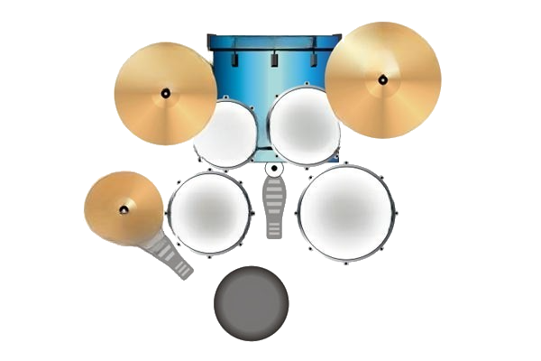

Выход
Разделить(S)
Соединить(W)
Добавить(A)
Удалить(D)
С/У лигу
Дублировать(E)
Удалить(R)
Вправо
Влево
Начало репризы
Конец репризы
Количество повторений (мин. 2):
Подтвердить
Отмена
LET RING
4
---
4
Добавить
такт(T)
0 - бас-бочка
1 - крэш
2 - райд
3 - малый
4 - закрытый хай-хет
5 - открытый хай-хет
6 - педаль хай-хета
7 - напольный том
8 - средний том
9 - высокий том
- - стик
= - бел райда
Выход
УДАРНЫЕ
Разделить(S)
Соединить(W)
Добавить(A)
Удалить(D)
Дублировать(E)
Удалить(R)
Вправо
Влево
Начало репризы
Конец репризы
Количество повторений (мин. 2):
Подтвердить
Отмена

4
---
4
Добавить
такт(T)